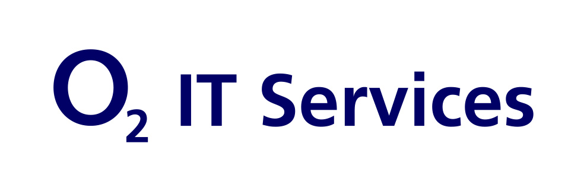
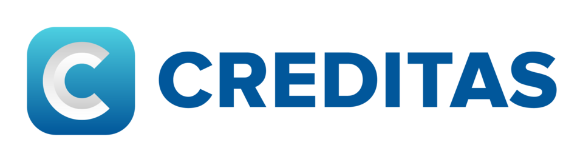

Automation Framework Demo
GitHub repository with Selenium + Java framework examples, Page Object Model structure and reusable test components.
View repositorySelenium + Java | Playwright | API Testing | CI/CD | E2E Automation
I develop stable, scalable and maintainable automated tests for web applications using Selenium WebDriver with Java and Playwright for modern E2E automation. I integrate tests into CI/CD workflows, improve test stability and support teams with clear bug reports and quality strategy.

GitHub repository with Selenium + Java framework examples, Page Object Model structure and reusable test components.
View repositoryModern end-to-end test suites built with Playwright for robust browser automation and reliable regression coverage.
View testsDownload a concise professional CV that summarizes QA experience, tools and automation achievements.
Download CVClear outline of how I approach automation, framework design and continuous testing for stable product releases.
Read more
Period: November 2024 – Present · Olomouc · Hybrid
Project: Ministry of Agriculture CZ – LPIS (Land Parcel Identification System)
I work on the nationwide LPIS system for the Ministry of Agriculture — a key GIS platform used for land parcel management, spatial data processing and agricultural subsidy administration. I ensure the quality, stability and accuracy of a system relied upon by thousands of users across the Czech Republic.

Period: December 2023 – March 2024 · Olomouc · On-site
I was responsible for testing mobile and web applications for Creditas Bank, ensuring their functionality, stability and overall user experience across different platforms.
Period: 2021 · Opava · On-site
Managed land adjustment documentation and coordinated technical workflows. Strengthened accuracy in administrative processes through disciplined quality control.
I’m actively seeking QA Automation Engineer roles where I can contribute to automation, E2E stability and quality-focused delivery. Reach out if you need a skilled QA specialist to improve test coverage and reduce release risk.
Phone: +420 604 163 329
LinkedIn: linkedin.com/in/veronika-obrtelov%C3%A1